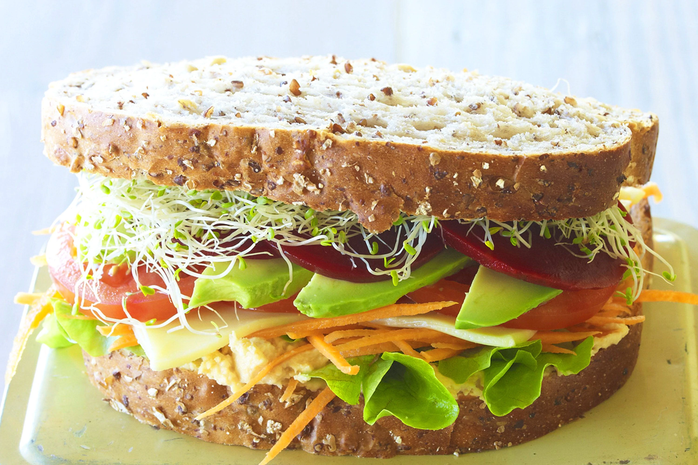

YUMMY HEALTHY SALAD SANDWICH
To taste happiness with MyCookBook
This delicious salad sandwich recipe is the perfect and easy recipe that you can prepare anytime. With fresh vegetables and yummy sauces make yourself happy!
INGREDIENTS

Bread :
Use any bread of your choice! Its always good if you have a sandwich bread
Vegetables :
Tomato,onion,spinach,beetroot,cucumber. But you can use any vegetable that you like!
Fresh herbs
Basil and parsley
Salt
Pepper
Cheese
Fresh Mayonnaise
INSTRUCTIONS
Prepare the Herb Mayo :
Combine the mayonnaise with fresh herbs, salt and pepper! Blend it well and keep it aside. Blend it until smooth!
Prepare the Vegetables :
Thinly slice all the selected yummy vegetables !
Assemble the sandwich :
Spread a good amount of mayo on your bread. Then top it with all your yummy vegetables ! On top of it put some cheese.
Your yummy, healthy and easy Salad Sandwich is ready to be served !!